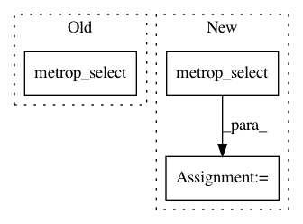

5d2767de3bbae72c7de7965f2afcb533df8e7ad3,pymc3/step_methods/metropolis.py,Metropolis,astep,#Metropolis#Any#,104
Before Change
else:
q = floatX(q0 + delta)
q_new = metrop_select(self.delta_logp(q, q0), q, q0)
if q_new is q:
self.accepted += 1
After Change
q = floatX(q0 + delta)
accept = self.delta_logp(q, q0)
q_new = metrop_select(accept, q, q0)
if q_new is q:
self.accepted += 1
In pattern: SUPERPATTERN
Frequency: 3
Non-data size: 3
Instances
Project Name: pymc-devs/pymc3
Commit Name: 5d2767de3bbae72c7de7965f2afcb533df8e7ad3
Time: 2017-02-05
Author: aseyboldt@users.noreply.github.com
File Name: pymc3/step_methods/metropolis.py
Class Name: Metropolis
Method Name: astep
Project Name: pymc-devs/pymc3
Commit Name: 6f0013f18e9ddeba5c2d5d40101d693d02f6c0e7
Time: 2016-10-13
Author: wanderer2@gmail.com
File Name: pymc3/step_methods/metropolis.py
Class Name: BinaryGibbsMetropolis
Method Name: astep
Project Name: pymc-devs/pymc3
Commit Name: 5d2767de3bbae72c7de7965f2afcb533df8e7ad3
Time: 2017-02-05
Author: aseyboldt@users.noreply.github.com
File Name: pymc3/step_methods/metropolis.py
Class Name: BinaryMetropolis
Method Name: astep